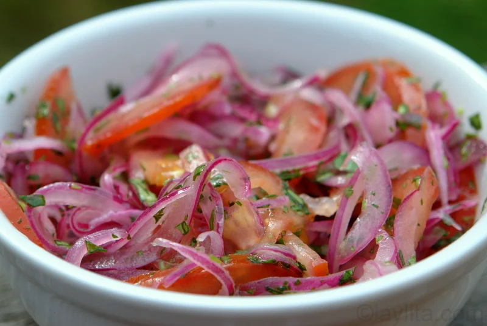

Salsa Cebolla

Description
Salsa Cebolla is a recipe that I grew up eating. The origins come from the Andes mountain range in South America. This recipe was passed down by my grandparennts from Ecuador.
Used primarily as a topping, salsa cebolla is a take on Ecuador's national dish, ceviche. This fish and shrimp-free dish pairs nicely on rice or a meat of your choosing.
Ingredients
- 6 Lemons
- 2 Snmall Red Onions
- 8 Roma Tomatoes
- One bunch of cilantro
- Salt
Steps
- Dice the red onions and put them into a large bowl
- Dice the red onion and place them in the bowl
- Finely chop the cilantro and add to the bowl
- Halve the lemons and squeeze into the bowl
- Add in 2 tbsps of salt
- Mix thorouhgly
- Cover the bowl with aluminum foil and place in the fridge for 30 minutes to let the flavors marinate
- Enjoy!